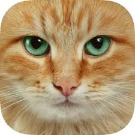

Verkefni 2.3
Mölflugur er hópur skordýra sem eru náskyld fiðrildum.
Bæði mölflugur og fiðrildi tilheyra ættbálki hreisturvængja. Af hreisturvængjum eru flestar tegundirnar
mölflugur eða um 160,000 tegundir og ennþá er ekki búið að fullgreina þær allar.
Flestar mölflugur eru næturdýr og því oft kallaðar náttfiðrildi en aðrar tegundir sofa á næturnar
og eru á ferðinni á daginn og enn aðrar sem eru á ferli í morgunsárið og á síðkvöldum.
Fatamölur einnig kallaður gulur fatamölur og sem fullorðið dýr mölfluga
(fræðiheiti: Tineola bisselliella) er mölfluga af mölfiðrildaætt.
Fatamölurinn er víða meindýr og lifir á dýrahárum svo sem ull og fiðri.

Köttur, húsköttur eða heimilisköttur (fræðiheiti: Felis silvestris catus) er undirtegund villikatta (fræðiheiti: Felis silvestris) sem er tegund lítilla rándýra af ætt kattardýra. Kettir eru rökkurdýr og kjötætur sem hafa lifað sem húsdýr í mörg þúsund ár. Forn-Egyptar hófu að nota ketti til að halda músum og öðrum nagdýrum frá kornbirgðum. Kettir eru eitt vinsælasta gæludýr heims.Hvernig ætti ég að vita um svona áhugaverð dýr? Þetta er svo merkilegt að ég hugsa að ég ætti bara að fara að sofa núna. Góða nótt gott fólk.